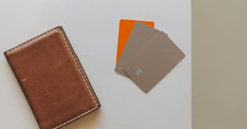

Miras yalnızca mal değil borç da getirir: reddin üç aylık süresi
Miras, ölümle birlikte kendiliğinden mirasçılara geçer; borçlar da dâhil. Reddetmek isteyen mirasçının üç aylık süresi vardır ve bu süre çoğu ailede farkına varılmadan geçer.
Mirasın reddi, kural olarak mirasçının ölümü ve mirasçı olduğunu öğrendiği tarihten itibaren üç ay içinde yapılır. Süre geçerse miras kayıtsız şartsız kabul edilmiş sayılır.
Afet sonrasında miras, çoğu ailede aylar sonra konuşulan bir konudur. Oysa hukuk beklemez: miras, ölümle birlikte kendiliğinden mirasçılara geçer — malvarlığı da, borçlar da.
Bu yüzden mirasın en kritik kararı "ne alacağım" değil, "kabul edecek miyim" sorusudur ve o sorunun bir süresi vardır.
Miras nasıl geçiyor?
Mirasçılar, mirasbırakanın ölümüyle mirası bir bütün olarak kazanır. Bütün derken kastedilen şudur: taşınmaz, banka hesabı, alacak, araç — ve kredi borcu, kart borcu, kefalet, vergi borcu.
Ret hakkı ve üç aylık süre
Yasal mirasçılar mirası reddedebilir. Ret süresi kural olarak üç aydır ve mirasçının ölümü ile mirasçı olduğunu öğrendiği tarihten işlemeye başlar.
Süre sessizce işler
Ret süresi kimse size hatırlatmadan işler. Süre geçtiğinde miras kayıtsız şartsız kabul edilmiş sayılır ve borçlardan sorumluluk doğar. Afet sonrasında cenaze, barınma ve hasar süreçleriyle uğraşırken en kolay kaçırılan süre budur.
Beyan, mirasbırakanın son yerleşim yeri sulh hukuk mahkemesine yapılır. Beyanın kayda geçtiğine dair belgeyi mutlaka saklayın.
Ret hakkını kaybettiren davranışlar
| Davranış | Sonucu |
|---|---|
| Tereke işlerine karışmak, mal kaçırmak veya gizlemek | Ret hakkı kaybedilir |
| Olağan yönetim ve zorunlu işler | Kural olarak ret hakkını etkilemez |
| Üç aylık sürenin geçmesi | Miras kayıtsız şartsız kabul edilmiş sayılır |
Pratik karşılığı: karar vermeden önce terekeye dokunmayın. Vefat edenin banka hesabından para çekmek, aracını satmak, eşyasını paylaşmak gibi işlemler sonradan "kabul" olarak değerlendirilebilir.
Tereke borca batıksa
Mirasbırakanın ödemeden aczi ölümü anında açıkça belli veya resmen tespit edilmişse mirasın reddedilmiş sayılacağı düzenlenmiştir. Buna karşılık uygulamada bu tespit her zaman kolay olmadığı için, süresinde ret beyanında bulunmak daha güvenli yoldur.
Terekenin durumu belirsizse terekenin korunmasına yönelik önlemler ve defter tutulması istenebilir; böylece aktif ve pasif net görülür.
Deprem dosyalarına özgü üç nokta
- Yıkılan binada mülkiyet devam eder. Bina yok olsa da arsa payı oranında paylı
mülkiyet kalır; miras bu paya işler (arsa payı ve kat mülkiyeti).
- Sigorta ve BES alacakları terekeye girmeyebilir. Lehtar atanmış bir poliçede ödeme
doğrudan lehtara yapılır; bu ayrım ret kararında önemlidir (ölüm hâlinde sigorta ve SGK).
- Ölüm tescili gecikirse her şey gecikir. Cenaze bulunamamış olsa dahi ölümün nüfusa
işlenmesi mümkündür ve süreleri başlatan işlem budur (ölüm karinesi ve miras).
Ne yapmalı?
- Ölüm tarihini ve mirasçı olduğunuzu öğrendiğiniz tarihi yazın; üç aylık süreyi
süre takviminize işleyin.
- Vefat edenin borç ve alacaklarını listeleyin: krediler, kartlar, kefalet, vergi.
- Karar verene kadar terekeye dokunmayın.
- Tereke belirsizse defter tutulması talebini konuşun.
- Kararsızsanız barodan ücretsiz danışma alın — bu süre, sonradan telafi edilemiyor.
Kanuni dayanak
| Mevzuat | Ne diyor |
|---|---|
| 4721 sayılı Türk Medeni Kanunu m.599 | Mirasçıların, mirasbırakanın ölümüyle mirası bir bütün olarak kanun gereğince kazandığını düzenler. |
| 4721 sayılı Türk Medeni Kanunu m.605-606 | Mirasın reddi hakkını ve reddin üç aylık süresini düzenler. |
| 4721 sayılı Türk Medeni Kanunu m.610 | Terekeye karışan mirasçının ret hakkını kaybedeceğini öngörür. |
| 4721 sayılı Türk Medeni Kanunu m.589 vd. | Terekenin korunmasına yönelik önlemleri ve defter tutulmasını düzenler. |
Sık sorulanlar
Vefat eden yakınımın kredi borcu bana geçer mi?
Miras, aktif ve pasifiyle bir bütün olarak mirasçılara geçer; borçlar da bu bütünün parçasıdır. Borcu üstlenmek istemiyorsanız reddetme yolunu süresinde kullanmanız gerekir.
Ret için süre ne kadar?
Kural olarak mirasçının, mirasbırakanın ölümünü ve mirasçı olduğunu öğrendiği tarihten itibaren üç aydır. Sürenin geçmesi hâlinde miras kayıtsız şartsız kabul edilmiş sayılır.
Nereye başvurulur?
Ret beyanı, mirasbırakanın son yerleşim yeri sulh hukuk mahkemesine yapılır. Beyanın kayda geçirilmesi ve dosya numarasının saklanması önemlidir.
Terekeden bir şey alırsam ne olur?
Terekeye karışan, tereke mallarını kendi malına katan veya gizleyen mirasçının ret hakkını kaybedeceği düzenlenmiştir. Bu yüzden karar vermeden önce terekeye dokunmayın; cenaze masrafı gibi zorunlu işlemler için hukuki destek alın.
Tereke borca batıksa yine de reddetmeli miyim?
Mirasbırakanın ödemeden aczi ölümü anında açıkça belli veya resmen tespit edilmişse miras reddedilmiş sayılır. Buna güvenmek yerine, durumu hukukçuya teyit ettirmek ve gerekiyorsa süresinde ret beyanında bulunmak daha güvenlidir.
Bu konuyla ilgili araç
Süre takvimiÜç aylık ret süresinin ne zaman dolduğunu görün.İlgili rehberler
 Yakınını kaybedenler
Cenaze bulunamadıysa ölüm nüfusa nasıl işlenir? Ölüm karinesi, gaiplik ve miras
Enkazda kaybolan kişi, cesedi bulunamasa bile ölmüş sayılabilir. Bu, mahkeme kararı gerektirmez ve mirası hemen açar. Gaiplikten farkı budur.
Yakınını kaybedenler
Cenaze bulunamadıysa ölüm nüfusa nasıl işlenir? Ölüm karinesi, gaiplik ve miras
Enkazda kaybolan kişi, cesedi bulunamasa bile ölmüş sayılabilir. Bu, mahkeme kararı gerektirmez ve mirası hemen açar. Gaiplikten farkı budur.
 Yakınını kaybedenler
Ölüm hâlinde sigorta ve SGK: DASK'ın ödemediği yerde hangi poliçe var?
DASK ölümü karşılamaz. Bedeni zararların karşılığı hayat sigortası, deprem teminatı seçilmiş ferdi kaza poliçesi, SGK ölüm aylığı ve çoğu ailenin varlığından habersiz olduğu BES birikimleridir.
Yakınını kaybedenler
Ölüm hâlinde sigorta ve SGK: DASK'ın ödemediği yerde hangi poliçe var?
DASK ölümü karşılamaz. Bedeni zararların karşılığı hayat sigortası, deprem teminatı seçilmiş ferdi kaza poliçesi, SGK ölüm aylığı ve çoğu ailenin varlığından habersiz olduğu BES birikimleridir.

Vergi, prim ve borçlar Kredi ve kredi kartı borçları: erteleme bir hak mı, karar mı? Deprem sonrası borç ertelemeleri kalıcı bir hak değil, düzenleyici kurum kararlarıdır. 2023'te uygulanan esnekliklerin ne olduğunu ve bugün ne yapılabileceğini ayrı ayrı anlatıyoruz. Kira ve mülkiyet
Bina yıkıldıktan sonra mülkiyet ne oluyor? Kat mülkiyeti, arsa payı ve yeniden inşa
Ana yapı tamamen yıkılırsa kat mülkiyeti sona erer; geriye arsa payı oranında paylı mülkiyet kalır. Yeni dairenizin büyüklüğünü bu oran belirler.
Kira ve mülkiyet
Bina yıkıldıktan sonra mülkiyet ne oluyor? Kat mülkiyeti, arsa payı ve yeniden inşa
Ana yapı tamamen yıkılırsa kat mülkiyeti sona erer; geriye arsa payı oranında paylı mülkiyet kalır. Yeni dairenizin büyüklüğünü bu oran belirler.